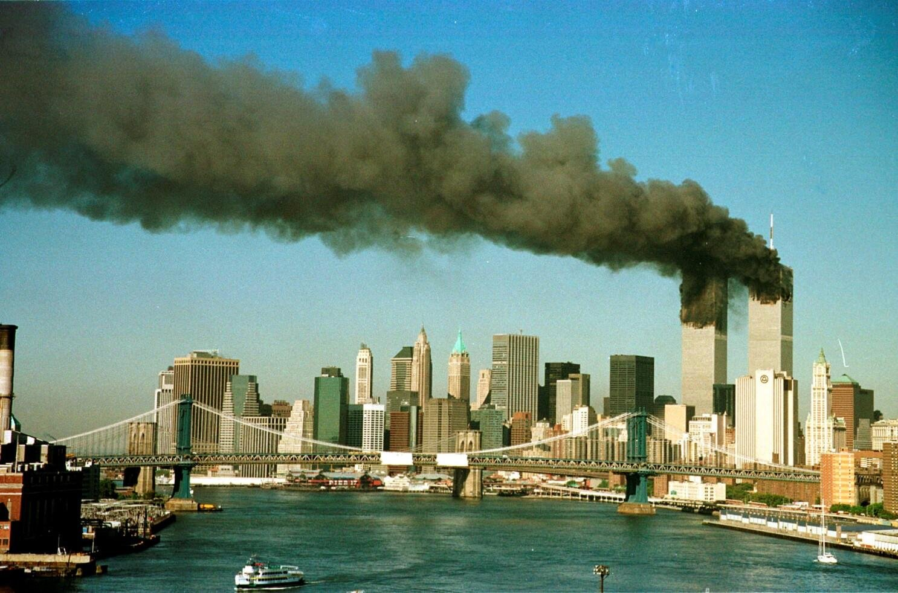

1991–2001
1991–2001: The Limits of American Power and the Unfinished Question
35Iraq after the Gulf War: sanctions, inspections, and sovereignty
After the liberation of Kuwait, Saddam Hussein continued to rule Iraq. UN sanctions and inspection efforts aimed to constrain the militaristic and weapon capabilities of Iraq. Civilians endured harsh economic and humanitarian suffering, with historical experts having differing views regarding the effects of the sanctions, war destruction, Iraqi government policies, and humanitarian constraints. Military forces were still present by the US and its allies. In a war conducted on the basis of reclaiming the national boundaries of Kuwait, coercion was imposed on Iraq afterward.
36Madrid Peace Conference, 1991
After the Gulf War, the Bush administration and its Secretary of State, James Baker, initiated new talks between Arabs and Israelis. In October 1991, the peace conference in Madrid began with the participation of Israeli, Arab states’ and Palestinian representatives to conduct talks on security issues, territories, and political representation. However, the interests and bargaining power of the participants made it difficult for the peace process to move forward.
37Oslo Accords, 1993
Behind-the-scenes negotiations funded by Norway resulted in the Israeli-Palestinian agreement known as the Declaration of Principles on Interim Self-Government Arrangements, signed on September 13, 1993 at the White House. Israel recognized the PLO as the representative of Palestinians, and the PLO recognized Israel and rejected terrorism. This agreement allowed for partial self-governance for the Palestinians and future discussions regarding their final status. Issues concerning Jerusalem, borderlines, settlements, refugees, and security had yet to be resolved. It was Clinton’s administration that accepted and supported the execution of this agreement but did not initiate secret talks behind the scenes.

38Operation Desert Fox, December 1998
The American and British armies carried out air strikes on Iraq in December 1998. The air strikes were justified by President Clinton based on the issue of weapons, inspections and security of the region. The issue brings up a new issue of sovereignty as compared to that of 1991 – the continued use of force to coerce a sovereign state seen as a threat to other nations without any invasion taking place.

39Camp David summit, 2000
The U.S. government arranged for President Clinton to hold talks with Israeli Prime Minister Ehud Barak and Palestinian Authority President Yasser Arafat in July 2000 to deliberate on issues such as those of final status. The talks collapsed without any breakthroughs. Historians and the conference participants have differing views as to why the talks failed. The aim of the U.S. government was to achieve peace and Palestinian self-governance while keeping friendly ties with Israel.
40Second Intifada, 2000–2001
The violence grew toward the end of September 2000 with the failure of the peace process, the occupation and the rival claims of politics and security. Both the Palestinian attacks and Israeli military operations resulted in great suffering among the civilians. The U.S. efforts to halt the hostilities and re-launch the peace process were limited by their power.
41September 11, 2001
Al-Qaeda launched an attack against the United States on September 11. The American government revised its national security strategy in terms of international terrorism, and the US military actions started in Afghanistan in October 2001. Afghanistan fits into the larger picture of Southwest Asian security history but is not quite the same as the Arab Middle East region. September 11 was the last date of the chronology, but cannot be seen simply as the result of one past intervention.

Chapter conclusion: The decade of the nineties showed that American military superiority could reclaim the territorial sovereignty of one state but could not answer all the regional issues. The Iraqi issue, Palestinian autonomy, and security problems illustrated this point.